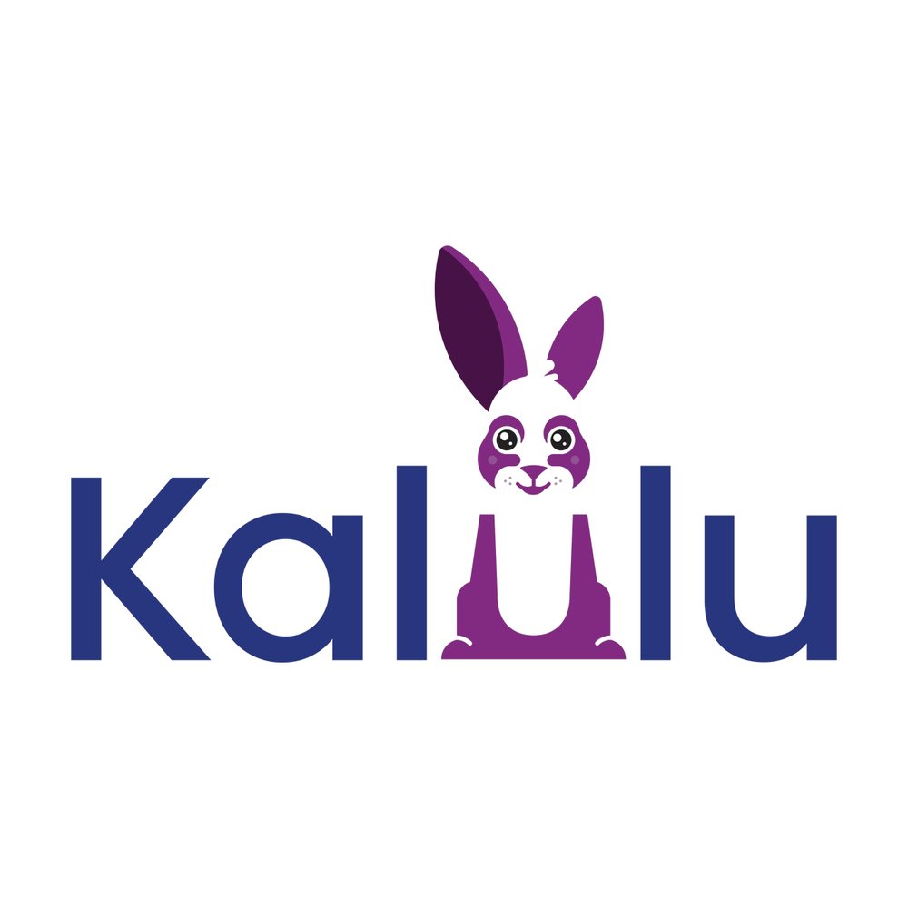

← Voltar ao início
Kalulu
Um método gratuito e científico para que todas as crianças aprendam a ler
O Kalulu é um projeto de ciência cidadã que adapta ao espanhol rio-platense um método de alfabetização 100% fônico, baseado em evidências científicas. Andrés faz parte de sua equipe interdisciplinar.
Ir ao site oficial do Kalulu ↗
Participar
Junte-se como psicopedagoga ao projeto de ciência cidadã para melhorar a alfabetização.
Quero participar ↗Material audiovisual
Vídeos e recursos do projeto no canal do Kalulu no YouTube.
Ver o canal ↗Materiais
Livretos, guia pedagógico, jogos e aplicativo do método em português do Brasil.
Ver materiais ↗Pesquisas
Nota científica “Kalulu & Cambe”, em português.
Ler a nota científica ↗
Produção original
Minidocumentário em Arrecifes
Um minidocumentário gravado em Arrecifes com depoimentos de crianças, mães e professores que participaram de uma das primeiras implementações do método.

Sobre o milagre de Arrecifes
Slide 01 / 05